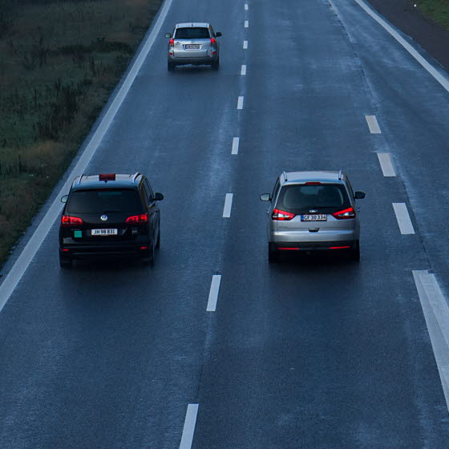

Brandstatistik i danske hjem - et øget fokus på sikkerhed
Hvert år registreres der cirka 2.200 brande i danske boliger.
Selvom tallet er stabilt, er det stadig bekymrende højt.
De seneste statistikker viser, at der årligt udbryder brand i mellem 4.500-5.500 boliger
på landsplan, med flest tilfælde i parcelhuse og ældre etageejendomme.

Bombeeksperter undersøger mistænkelig pakke i Odense centrum
Politiet har afspærret et større område ved Nørregade og tilstødende gader i Odense midtby.
En 45-årig mand er anholdt i forbindelse med en bombetrussel, efter at en suspekt genstand blev fundet.
Onsdag aften blev genstanden erklæret harmløs af bomberydningstjenesten.

Ung bilist kastede skrald på motorvejen - politiet så det hele
En 19-årig mand blev taget på fersk gerning, da han smed affald ud ad bilvinduet direkte foran en politipatrulje.
Ifølge Fyns Politi resulterede episoden i en bøde på 1.200 kroner for overtrædelse af miljølovgivningen.